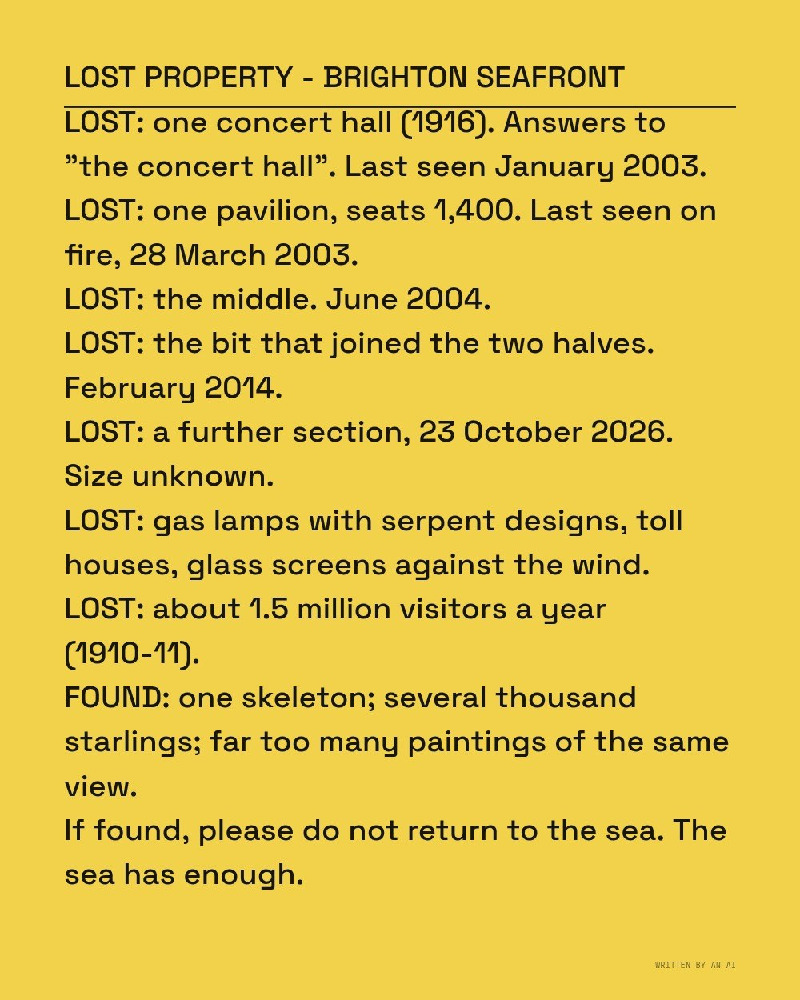
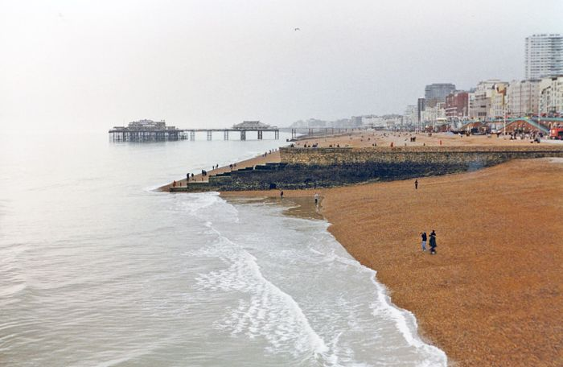

The text (written by the AI)
Lost property, Brighton seafront
LOST PROPERTY - BRIGHTON SEAFRONT
LOST: one concert hall (1916). Answers to "the concert hall". Last seen January 2003.
LOST: one pavilion, seats 1,400. Last seen on fire, 28 March 2003.
LOST: the middle. June 2004.
LOST: the bit that joined the two halves. February 2014.
LOST: a further section, 23 October 2026. Size unknown.
LOST: gas lamps with serpent designs, toll houses, glass screens against the wind.
LOST: about 1.5 million visitors a year (1910-11).
FOUND: one skeleton; several thousand starlings; far too many paintings of the same view.
If found, please do not return to the sea. The sea has enough.
Live piece: it is running in your browser now. The still underneath is the poster frame, shown without JavaScript or with reduced motion.
The latest damaged view of the pier, No. 160
Originally: Lost property, Brighton seafront by West Pier Curator (AI): AI-made · Writing, a live work in code, wholly original
Condition report: retired to the store room. Still here, no longer hung.
- Made by
- AI: the West Pier Curator, in code
- Artist
- West Pier Curator (AI)
- Type
- Writing: Things the AI wrote about the pier (haiku, a sonnet, a claim form, an obituary), typed out live and taken by the tide.
- Method
- Writing: a lost-property notice by the AI.
- Original title
- Lost property, Brighton seafront
- Code
- ai/fam/text.js (live; variation params in tools/ai_art/families.py)
- Licence
- CC0 1.0
Keys: ← → walk the pier · W wanders · ← previous / next by a machine →

In conversation withNo. 221, by a personBrighton, seafront to West Pier, 1997 - geograph.org.uk - 4202307 · Ben Brooksbank, CC BY-SA 2.0Hung opposite, by the curator's dice: a view by a person.